新艺油画一款用3D技术模拟油画的强大软件。它从油画绘画工具以及绘画过程等各方面模拟油画的创作过程，旨在为大家提供一个更接近真实的专业的油画平台。它的主要功能有：
这个产品对初学者和专业人士一样适用。对于初学者来说，可以掌握油画的每一个工具，并对绘画过程进行模拟，实训。而对于专业人士来说，这是一种新的媒介，新的平台，你可以用它来完成你的新作品。
要使用这个应用程序，你需要有一个支持Apple Pencil的iPad Pro 12.7或iPad Pro 9.7。
当您使用Apple Pencil时，您可以三维定位。上下方向称为高度，而左右方向称为方位角：
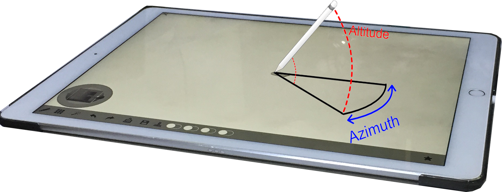
这个应用程序的目标是尽可能地模拟真实的油画。准确地说，仿真包括以下几个方面：
此应用程序尽可能模拟真实的绘画方法。它不仅提供了一个用于准备颜料的调色板，而且还提供了很难重复绘画的功能。在相同的条件下，用户所做的所有笔画都非常相似，但从不相同。
支持绝大部分的油画工具，如画笔，画刀和蓬松笔。
该应用程序旨在模拟自然绘画过程。混色是绘画解决方案的主要功能。当然，我们支持它。此外，我们在绘画过程中模拟真实的混色过程。我们的目标是提供以下高级功能
传统软件中使用颜色的方式都是基于机器显示颜色的方式，它是基于光的发射的，而现实世界中染料和颜料的颜色是基于光吸收的。
对于某些颜色来说，光发射的混合与光吸收的混合是不同的。例如，随着发光，与黄色混合产生灰色。但是在吸收光中是绿色的。因此，使用发光系统进行绘画不但对用户不直观，而且在梯度上给出了错误的结果。
| 基于光的发射 | 基于光的吸收 | |
|---|---|---|
| 渐变： 红色到黄色 | 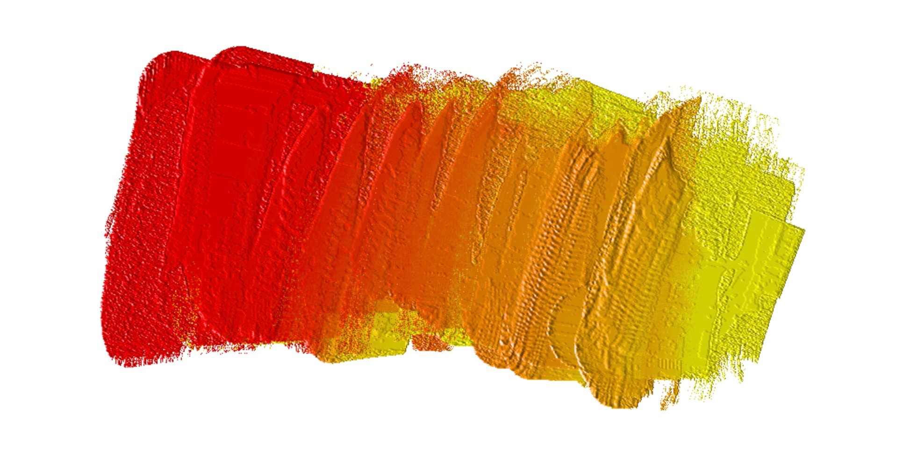 | 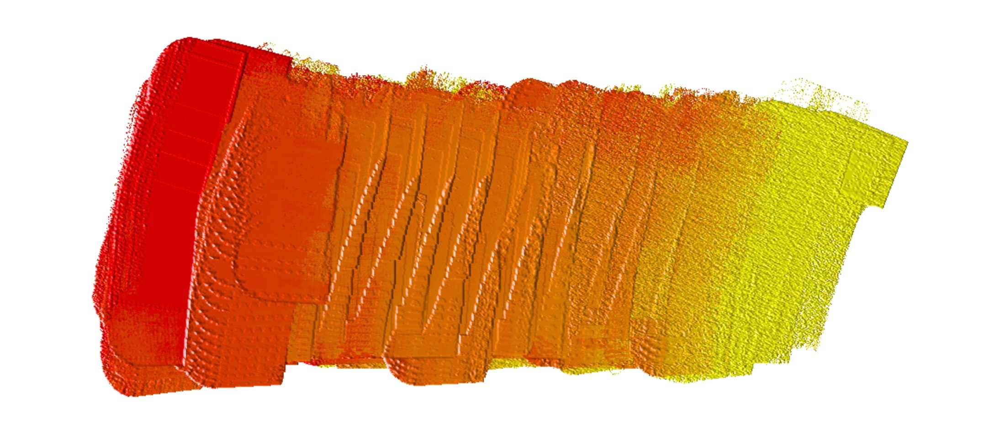 |
| 渐变： 蓝色到黄色 | 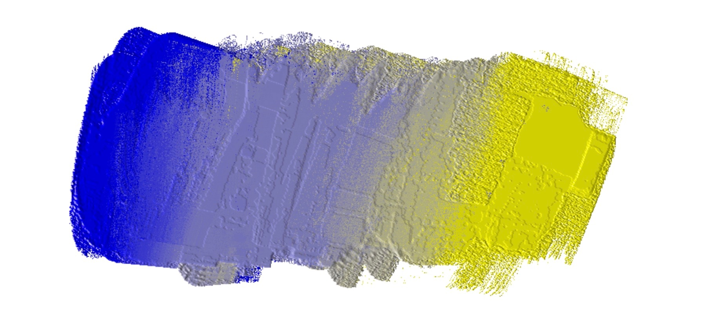 | 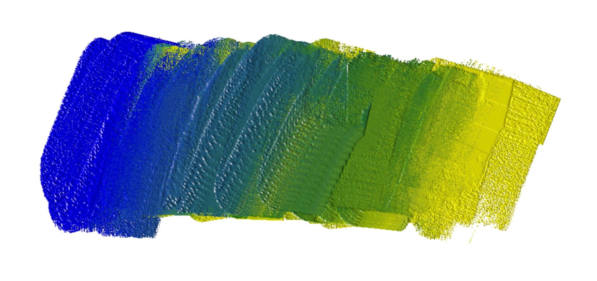 |
| 渐变： 红色到蓝色 | 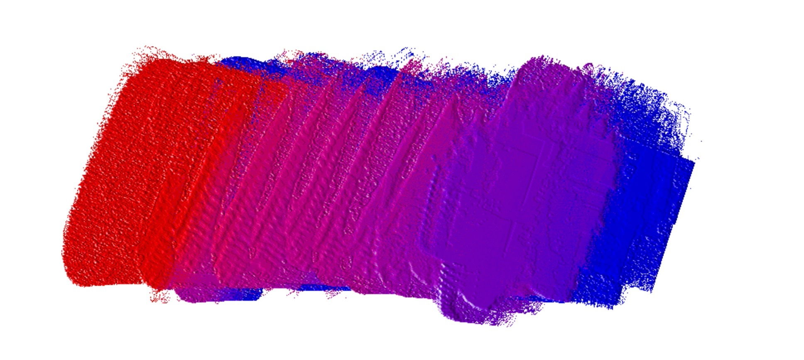 | 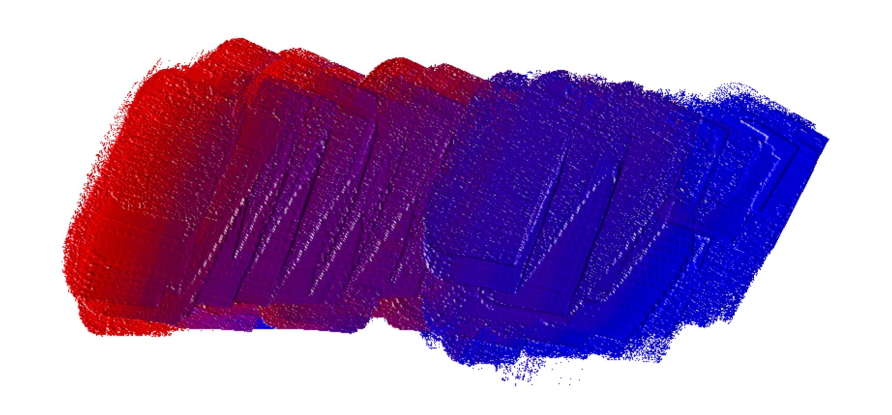 |
| 色轮 | 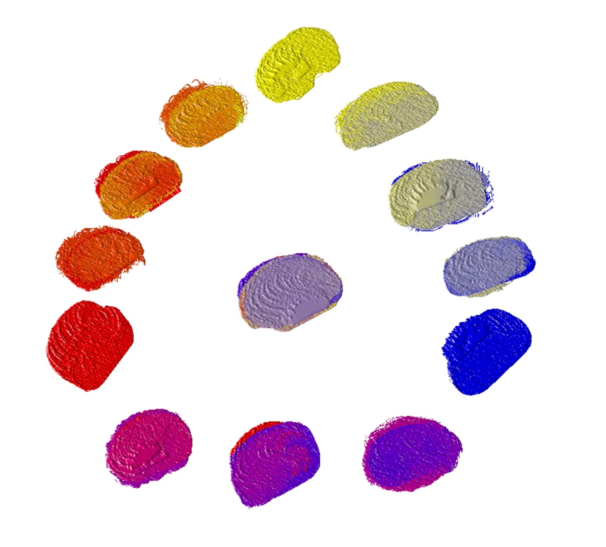 | 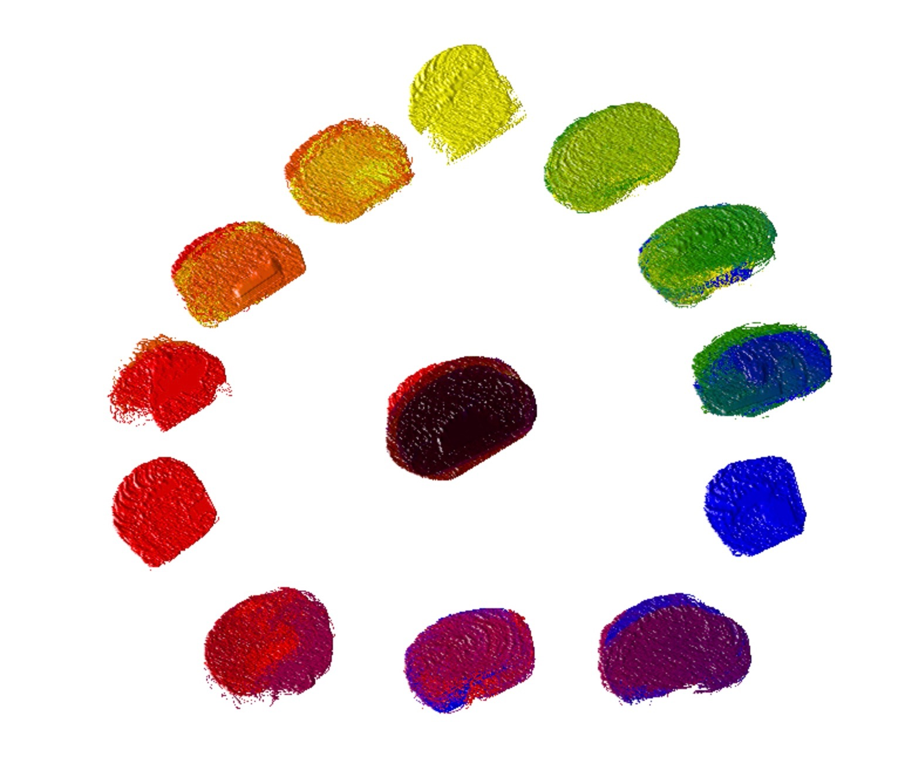 |
可以使用发光混合来产生从红色到黄色和从红色到紫色的梯度。但只有光吸收混合可以混合从蓝色到黄色的绿色，红色，蓝色和黄色的黑色渐变。简单一点说就是：发光中的混合倾向于白色，并且光吸收中的混合倾向于黑色。
| 我们的模拟 | 真正的油混合 | |
|---|---|---|
| 渐变： 蓝色到黄色 |
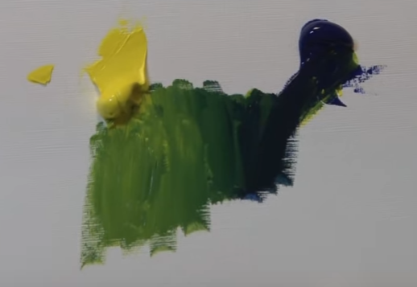 | |
| 渐变： 红色到蓝色 |
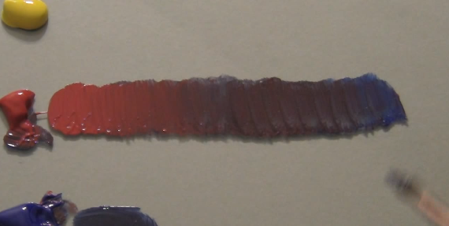 | |
| 渐变：红色到黄色 |
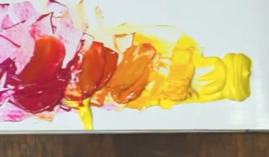 | |
| 色轮 |
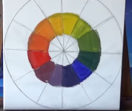
|
我们的应用程序使用光吸收系统，原始的颜色是红色，黄色和蓝色。所以你可以用与调色板一样的真实油画混合颜色。
我们的绘画工具，如画刀和画笔是只一个彩色载体。它可以从绘画支架上的一个位置取出一些颜色，然后放到另一个位置。所有的参数都在着色期间得以保存，如数量和密度。
在绘画过程中，一些绘画工具如画刀和画笔在不同的位置收集不同的颜色。它就形成了一种颜色模式。
| 描述 | 抓屏 |
|---|---|
|
色彩模式的创建
色彩模式将会保存到当前的绘画工具中，当然也会保存到整个绘制作品中。 |
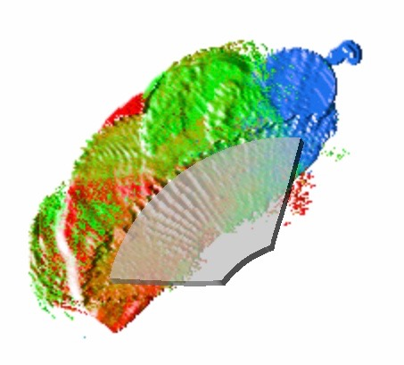 |
| 使用色彩模式进行点画法示例 |
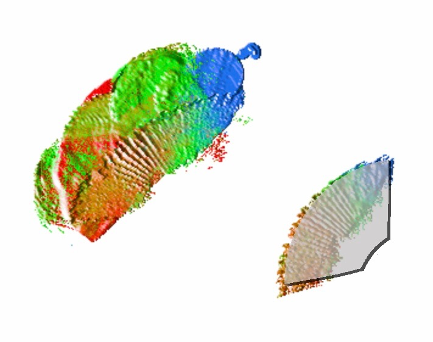 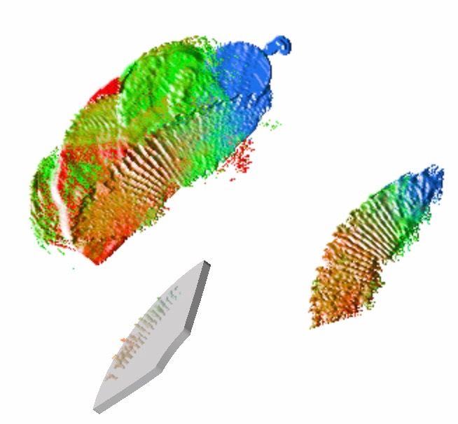 |
| 使用相同色彩模式的不同效果 |
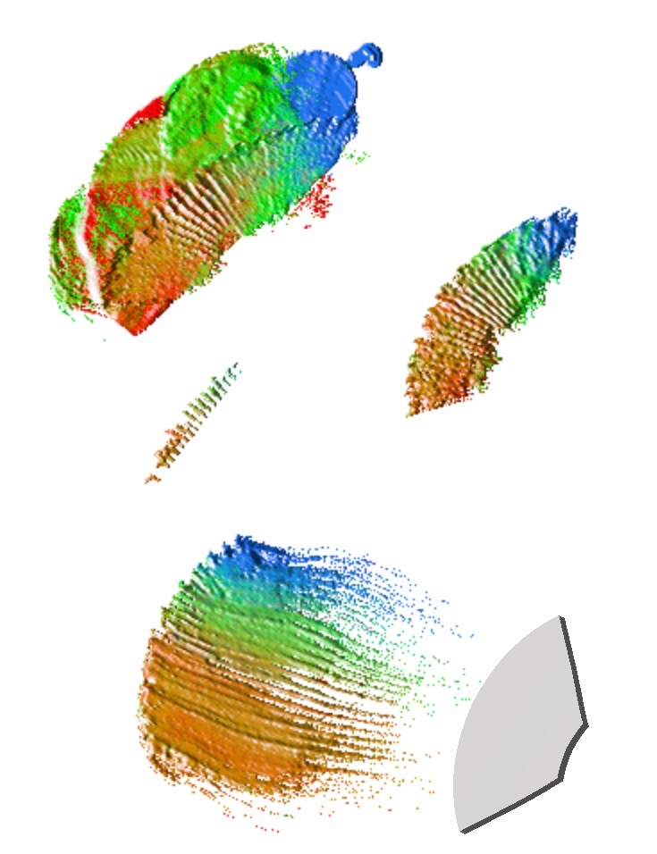 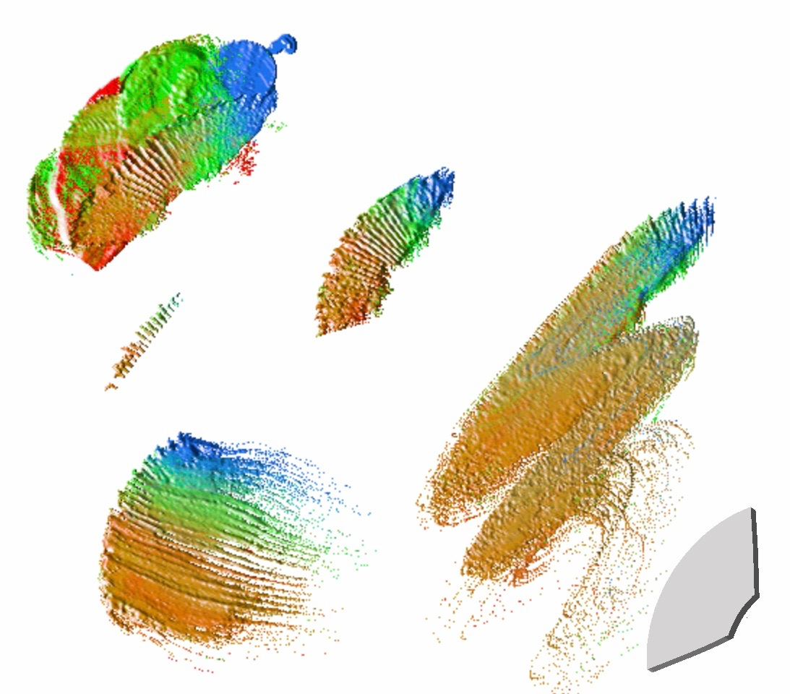 |
色彩模式有两种保存方式：
| 色彩模式管理 | 描述 |
|---|---|
|
保存到当前绘画中 |
这个色彩模式会保存到当前的工具中，它能够通过“自动重置”的设置来重复使用。 |
|
保存到整个应用程序中 |
我们将会创建一个填充了这个色彩模式的新的绘画工具。 |
在真实的物理世界中，色彩的密度对绘画起着重要的作用。它会影响层的厚度和色彩的混色。大颜料的密度可以产生更好的厚涂效果，而薄的颜料密度可以产生水或云的效果。
这个应用程序会模拟像松节油这样的媒介。在真正的油画中，松节油是一种稀释剂，它会使得绘画看起来更像水彩，能够使油画干的更快。
颜料特性的模拟包括两种状态：干燥和湿润。干燥的颜料，它是固态的，它不参与绘画中的颜色混合。湿润的颜料有一个湿度值，用于控制颜料的密度。湿润的颜料可以通过干燥机在专门的视图中进行吹干，但是，干躁之后就不能再回到湿润的状态。 颜料的湿度可以由“松节油”，“蓬松笔”和“湿画模式”控制。
颜料湿度的模拟消耗了很多iPad内存，为了实现湿度的重要价值，Apple Pencil的响应时间受到了一定的影响，在最糟糕的时候，虽然它的响应时间增加了2倍。
画布是油画创作中非常重要的选择，我们的应用程序支持不同的面料质地和粗糙程度的画布。
| 名称 | 描述 | 默认值 |
|---|---|---|
| 左右手模式 | 面板的左右手显示支持 | 右手模式 |
| 工具栏和面板的延迟显示时间 | 绘画暂停时，是否要延迟显示辅助工具栏和面板。这个设置是为了增加绘画过程的连续性，如果你不想在连续的绘画过程中被这些辅助工具打扰，可以将这个延迟时间设置的稍微长一点。 | 1秒 |
| 开启或关闭工具栏和面板的延迟显示 | 开启或关闭工具栏和面板的延迟显示，和上一条“工具栏和面板的延迟显示时间”配合使用。 | 开启 |
| 错误提示音 | 出错时播放声音或者显示对话框。 | 显示对话框 |
| 自动保存间隔时间 | 自动保存绘画状态的间隔时间。 | 1分钟 |
| 启用或关闭自动保存 | 启用或关闭自动保存，和上一条“自动保存间隔时间”配合使用。 | 启用 |
| 灵敏度 | 它是用来控制着Apple Pencil的压力感受力。当它设为1.0时，表示直接使用苹果铅笔的压力。当它设为2.0时，表示Pencil的压力只有0.0 - 0.5将用于绘画。灵敏度可以设置为1.0 - 5.0。 | 2.5 |
不论是导入还是导出，我们的产品都支持两种格式：
支持图片格式的导出是为了能和其它的软件更好的交互。
导入图片的方式有两种
从工具外导入图片，比如从相册中，你可以选择以某一张图片作为背景，创建一个和该图片一样大小的画布进行创作。当然了，这个过程实际上分为两步：
图片的导出只能在工具内完成。
共享是通过调用iPad内置的共享按钮来完成的。
源文件格式的支持是为了能让用户更好的分享自己的作品，也能更好的实现备份，恢复等功能。
从画册中导出的源文件，通常会放在iPad的共享文件夹中，你可以通过iTunes连接iPad来读取这些源文件。